<!DOCTYPE lake>
<h2 data-lake-id="OG3Y5" id="OG3Y5"><span data-lake-id="u70792fcd" id="u70792fcd">下载</span></h2><p data-lake-id="ufcfc2089" id="ufcfc2089"><a data-lake-id="uf8130fb1" href="https://www.st.com.cn/zh/development-tools/stm32cubemx.html" id="uf8130fb1" rel="noopener noreferrer" target="_blank"><span data-lake-id="u8fdbcc93" id="u8fdbcc93">https://www.st.com.cn/zh/development-tools/stm32cubemx.html</span></a></p><p data-lake-id="ucbbf9143" id="ucbbf9143">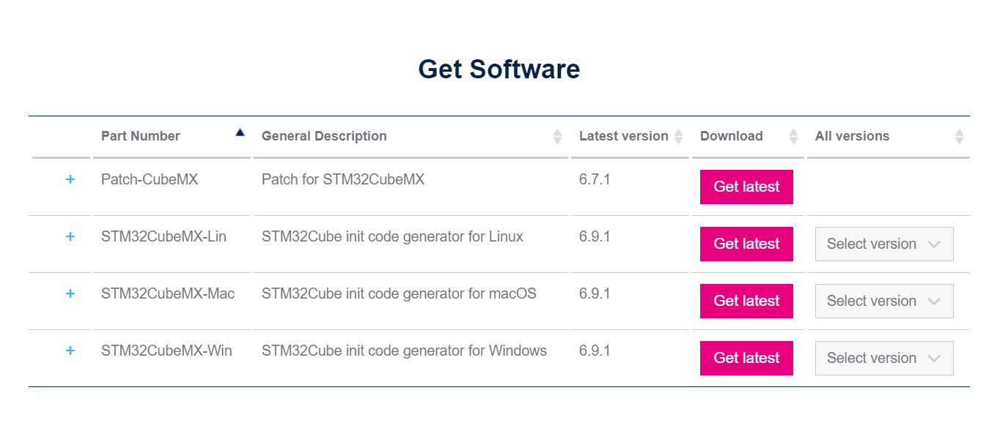</p><p data-lake-id="u60e97343" id="u60e97343"><span data-lake-id="ucb5c314a" id="ucb5c314a">根据不同平台下载，windows下载-Win版即可。</span></p><h2 data-lake-id="l6S8k" id="l6S8k"><span data-lake-id="uc03c5b1e" id="uc03c5b1e">安装</span></h2><h3 data-lake-id="RFIe2" id="RFIe2"><span data-lake-id="ud065a31e" id="ud065a31e">解压</span></h3><p data-lake-id="ubafb13de" id="ubafb13de">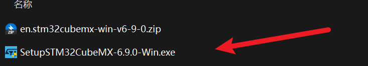</p><p data-lake-id="ud44c148c" id="ud44c148c"><span data-lake-id="uc3ead870" id="uc3ead870">下载的是zip文件，进行解压，得到一个exe文件。</span></p><h3 data-lake-id="QOgm7" id="QOgm7"><span data-lake-id="udcf589c3" id="udcf589c3">安装</span></h3><p data-lake-id="u9620263e" id="u9620263e"><strong><span style="color: #DF2A3F"><u><span data-lake-id="ue675a7a3" id="ue675a7a3">得到的exe文件，必须放到一个没有空格，没有中文的目录</span></u></span></strong><span data-lake-id="u73cc4bc6" id="u73cc4bc6">。然后双击。</span></p><p data-lake-id="uec126d19" id="uec126d19"><span data-lake-id="uad816366" id="uad816366">安装步骤如下：</span></p><p data-lake-id="u6b91abdc" id="u6b91abdc">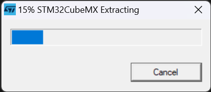</p><p data-lake-id="u6570fa80" id="u6570fa80"><span data-lake-id="u60f0b7fc" id="u60f0b7fc">点击【Install for all users】</span></p><p data-lake-id="ufb473ed2" id="ufb473ed2">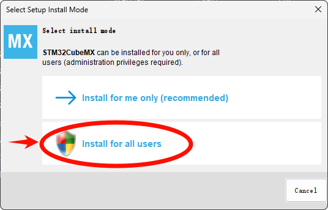</p><p data-lake-id="u8d75e940" id="u8d75e940">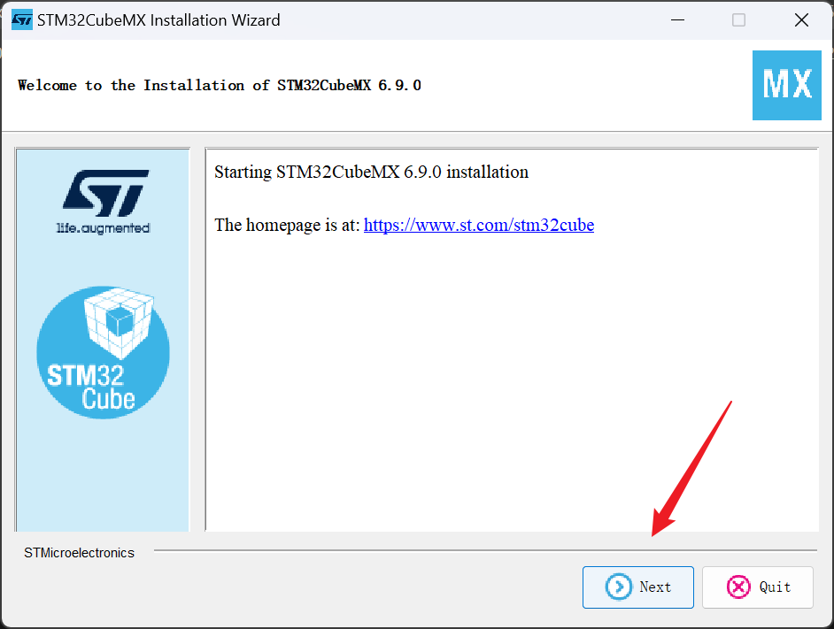</p><p data-lake-id="u4bf48d9e" id="u4bf48d9e">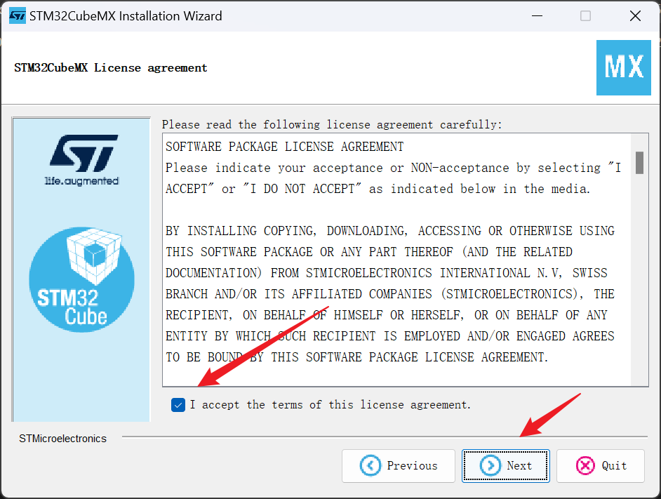</p><p data-lake-id="ued2f01fc" id="ued2f01fc">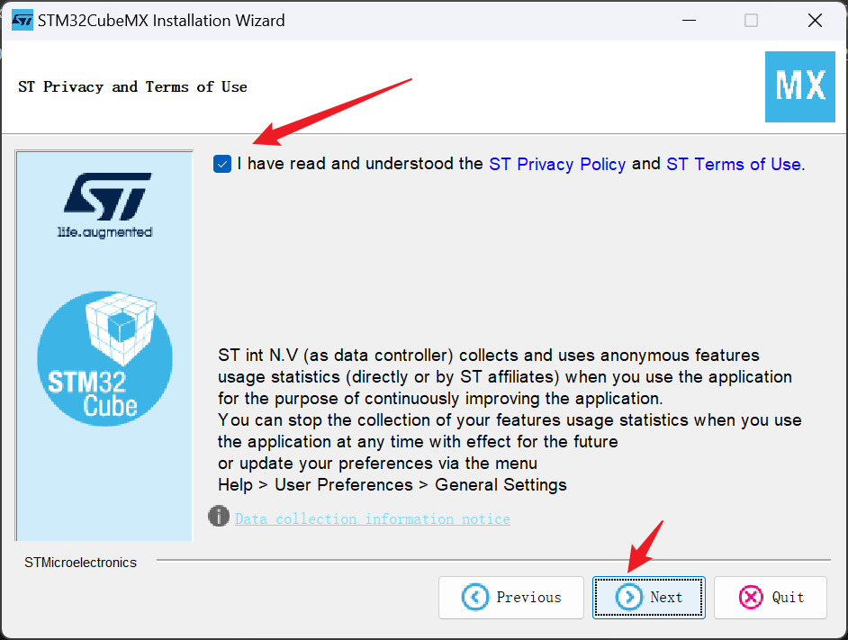</p><p data-lake-id="u6537ab11" id="u6537ab11"><span data-lake-id="u5eecd3bf" id="u5eecd3bf">选择一个没有空格和中文的目录进行安装，建议放在一个</span><code data-lake-id="u5e843abf" id="u5e843abf"><span data-lake-id="ucc940409" id="ucc940409">ST</span></code><span data-lake-id="u6a77186c" id="u6a77186c">的子目录</span><code data-lake-id="ue326c091" id="ue326c091"><span data-lake-id="u95fc1a90" id="u95fc1a90">STM32CubeMX</span></code></p><p data-lake-id="u35adbee3" id="u35adbee3">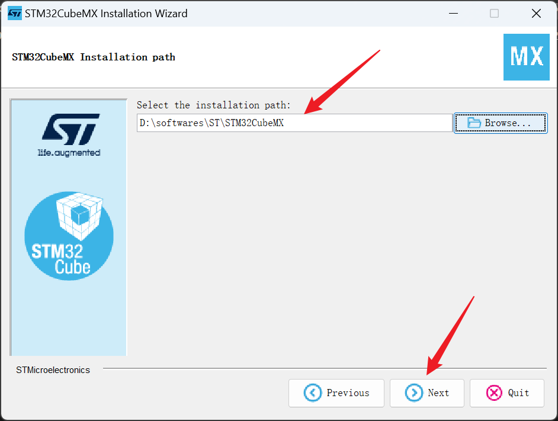</p><p data-lake-id="uc1a49284" id="uc1a49284">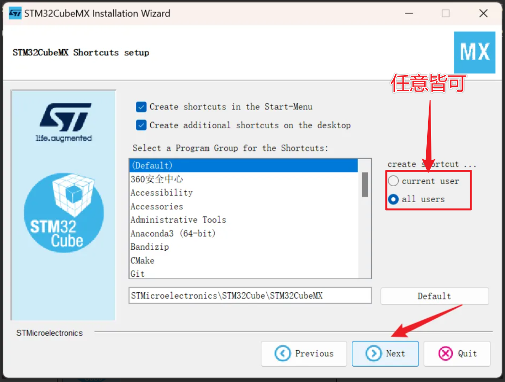</p><p data-lake-id="uf4a04674" id="uf4a04674">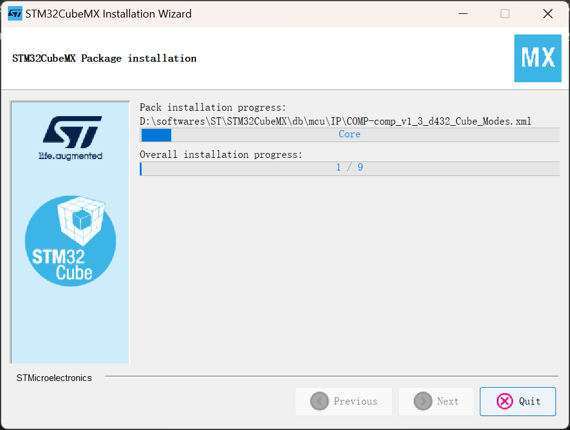</p><p data-lake-id="u672cd40a" id="u672cd40a">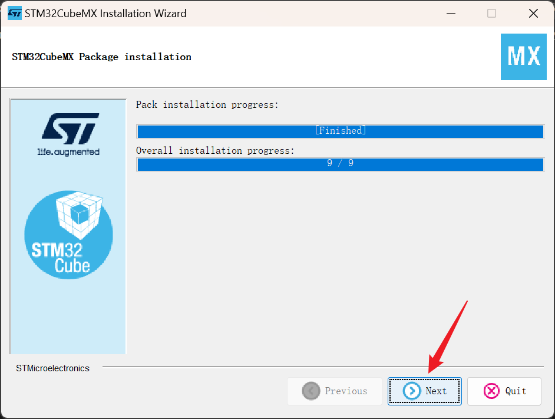</p><p data-lake-id="u76c05a65" id="u76c05a65">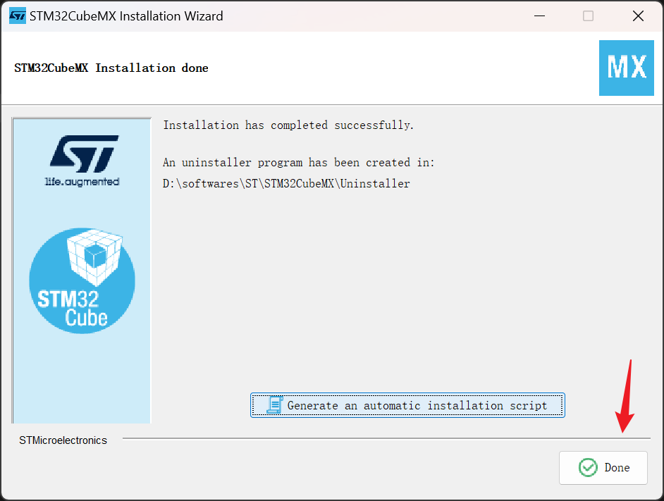</p><h3 data-lake-id="mMwuB" id="mMwuB"><span data-lake-id="uf6313603" id="uf6313603">添加开发包</span></h3><h4 data-lake-id="thf6b" id="thf6b"><span data-lake-id="u913a82f3" id="u913a82f3">修改仓库路径</span></h4><p data-lake-id="u65c1b673" id="u65c1b673">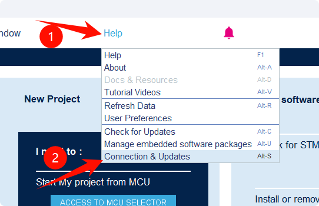</p><p data-lake-id="u5677c1c0" id="u5677c1c0"><span data-lake-id="uf149011b" id="uf149011b">将仓库路径和安装目录放在一起</span></p><p data-lake-id="u9aced600" id="u9aced600">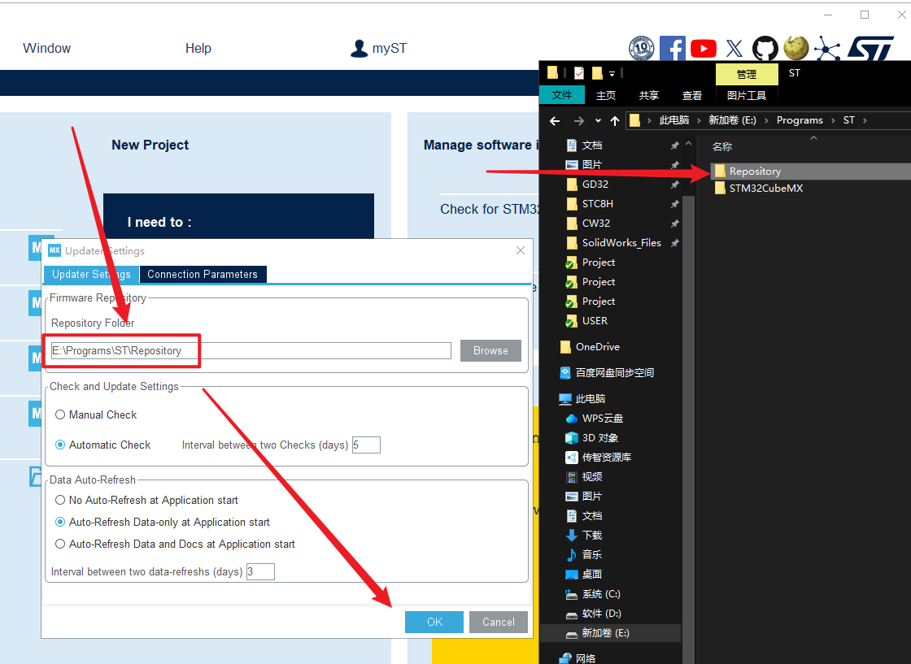</p><h4 data-lake-id="F98iT" id="F98iT"><span data-lake-id="u9e4bd73a" id="u9e4bd73a">解压已有软件开发包（快，推荐）</span></h4><p data-lake-id="ud7a64ac2" id="ud7a64ac2"><span data-lake-id="u347d0d72" id="u347d0d72">将我们提供的</span><code data-lake-id="uf3c267d9" id="uf3c267d9"><span data-lake-id="uc8172206" id="uc8172206">Repository.7z</span></code><span data-lake-id="u8a498efc" id="u8a498efc">解压为</span><code data-lake-id="u0a8dc6bc" id="u0a8dc6bc"><span data-lake-id="uf0dcbe78" id="uf0dcbe78">ST/Repository</span></code><span data-lake-id="u6a9f636c" id="u6a9f636c">目录</span></p><h4 data-lake-id="tNxyM" id="tNxyM">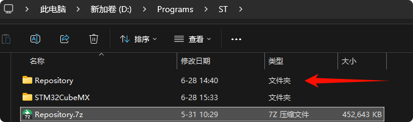</h4><p data-lake-id="ud1b92b90" id="ud1b92b90"><span data-lake-id="u19b8dd40" id="u19b8dd40">重新打开包管理，检查是否配置成功，前边有绿色方块为成功：</span></p><p data-lake-id="ufa89e615" id="ufa89e615">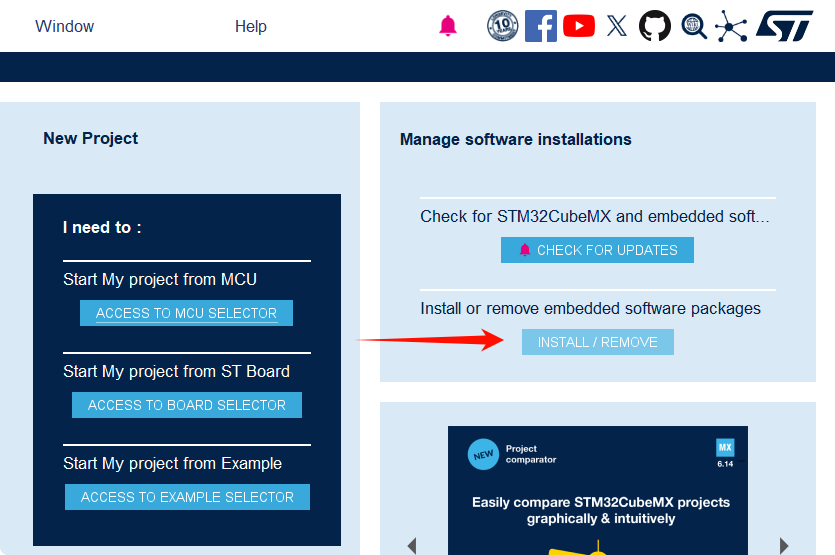</p><p data-lake-id="ueeab55ab" id="ueeab55ab">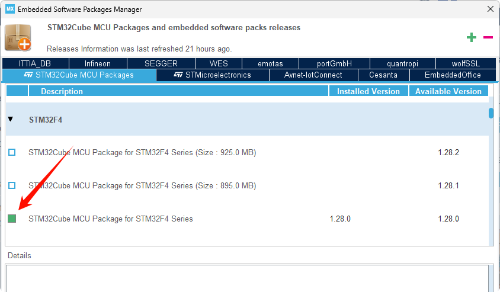</p><p data-lake-id="u365c2882" id="u365c2882"><span data-lake-id="u3560d898" id="u3560d898">​</span><br/></p><h4 data-lake-id="IQsQh" id="IQsQh"><span data-lake-id="u0ab9069c" id="u0ab9069c">下载软件开发包（慢，不推荐）</span></h4><p data-lake-id="uead65e30" id="uead65e30">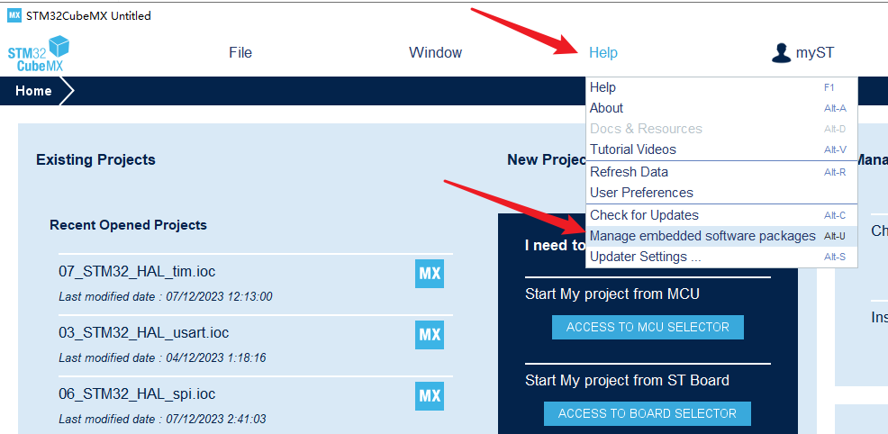</p><p data-lake-id="u1c3449bd" id="u1c3449bd"><span data-lake-id="uf36ecc90" id="uf36ecc90">展开STM32F4</span></p><p data-lake-id="u79240139" id="u79240139">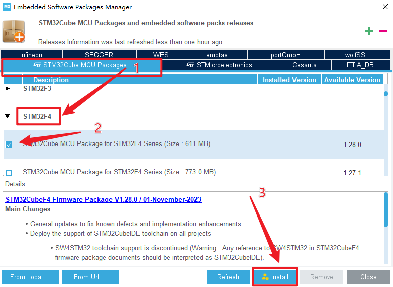</p><p data-lake-id="ua3716206" id="ua3716206">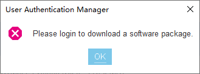</p><p data-lake-id="ufb146652" id="ufb146652"><span data-lake-id="ud5f68ae2" id="ud5f68ae2">进行登录后下载，由于ST服务器位于国外，下载速度非常慢。</span></p><p data-lake-id="uf7024a09" id="uf7024a09"><strong><span class="lake-fontsize-16" data-lake-id="u448c0c2b" id="u448c0c2b" style="color: #DF2A3F">所以强烈推荐直接解压本地已经准备好的仓库包。</span></strong></p><p data-lake-id="u8c374b14" id="u8c374b14">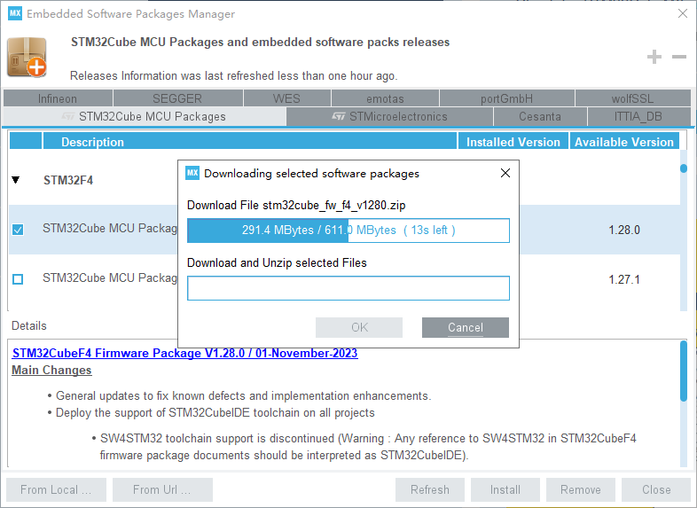</p><p data-lake-id="u51e6c3bf" id="u51e6c3bf">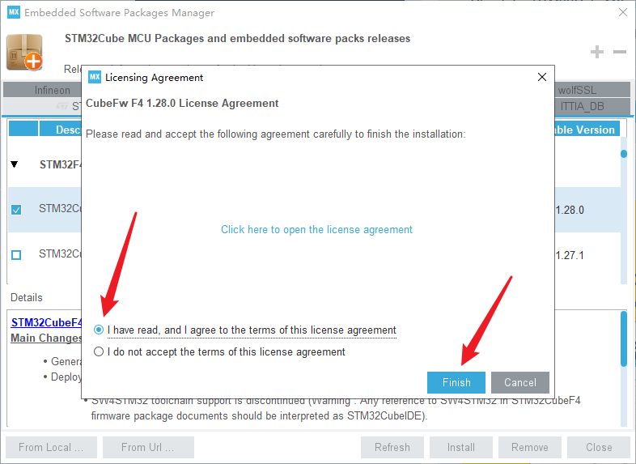</p><p data-lake-id="u94e6f930" id="u94e6f930"><br/></p>